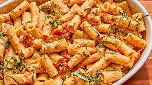

Pasta Recipe

This is a faster, and less expensive Pasta. Who doesnt love Pasta?
Ingredients:
- 500g pack penne
- 1 pound lean ground beef
- 4 tbsp olive oil
- 1 large red chilli , deseeded and finely chopped, optional
- 16 spring onions , cut into long strips
- 300g cherry tomato
- Pinch golden caster sugar
- Juice 1 lemon
- Grated parmesan , to serve
Steps:
- Cook the penne according to the pack instructions. While the pasta is cooking, heat the oil very gently and add the chilli, if using, and the spring onions. Slowly cook the spring onion until wilted, then add the cherry tomatoes and sprinkle with the sugar. Turn up the heat and cook until the tomatoes are blistered.
- Drain the pasta and tip into a large bowl. Toss with everything from the tomato pan and the lemon juice. Serve in pasta bowls with grated parmesan.
Return Home